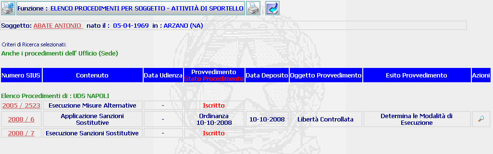
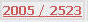
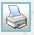

ELENCO PROCEDIMENTI PER SOGGETTO-ATTIVITA' DI SPORTELLO: La funzione consente di visualizzare l'elenco (ottenuto in seguito alla visualizzazione di un elenco soggetti con procedimenti di sorveglianza-attività di sportello) dei procedimenti iscritti a carico di un soggetto e di accedere al relativo dettaglio del procedimento, nonchè al dettaglio del provvedimento.
La differenza sostanziale rispetto all'elenco all'elenco soggetti con procedimenti di sorveglianza è data dal fatto che, utilizzando questa modalità, i provvedimenti sono visualizzati solo dopo che gli stessi sono stati depositati
LE MASCHERE VIDEO
La funzione viene realizzata attraverso la maschera seguente in cui compare l'elenco dei procedimenti di sorveglianza iscritti a carico del soggetto individuato

COME FARE PER ...
| Per
visualizzare il
dettaglio del soggetto l'utente deve
cliccare sul link relativo al cognome/nome del soggetto evidenziato in
rosso;
|
| Per visualizzare il dettaglio del procedimento Sius l'utente deve cliccare sul link relativo all' Anno/Numero del procedimento Siep evidenziato in rosso; |

|
Per
visualizzare
il
dettaglio ordinanza/decreto
l'utente deve
cliccare sul pulsante
|
| Per generare
la stampa dei procedimenti
iscritti a carico del soggetto l'utente deve cliccare sul pulsante
 |
| Per tornare alla maschera precedente
l'utente deve cliccare sul pulsante
|
CAMPI
La presente funzione non prevede campi da compilare
PULSANTI
Oltre ai pulsanti
 e
e
 facenti parte del gruppo di
pulsanti di "Uso Comune" è
presente il seguente pulsante:
facenti parte del gruppo di
pulsanti di "Uso Comune" è
presente il seguente pulsante:
|
PULSANTE |
DESCRIZIONE |
|
|
A fronte di tale comando, il sistema permette di generare, editare e stampare la lista dei procedimenti a carico del soggetto. |
|
|
Questo pulsante ha lo scopo di visualizzare il dettaglio ordinanza/decreto . |
BOTTONI
Oltre ai comandi funzionali relativi al menù verticale non sono presenti altri bottoni.